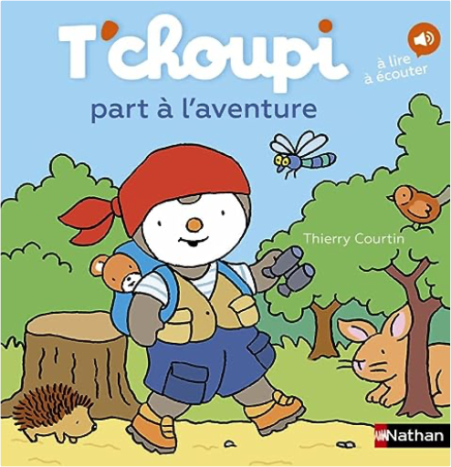

Books
Movies
Albums
Videogames
Games
BD
BD Camille
Blu-ray
Business
Camille
Comics
Cooking
Lego
Manga
Pauline
Photography
Star Wars
T'choupi
Travel
TV Shows
Un livre dont vous êtes le héro
Vinyl
Walt Disney
5
6
7
8
9
T'choupi, tome 80 : visite la caserne des pompiers
Thierry Courtin

T'choupi, tome 81 : part à l'aventure
Thierry Courtin
T'choupi, tome 82 : a un nouveau copain
Thierry Courtin
5
6
7
8
9


 Made with Delicious Library Made with Delicious Library
Made with Delicious Library Made with Delicious Library